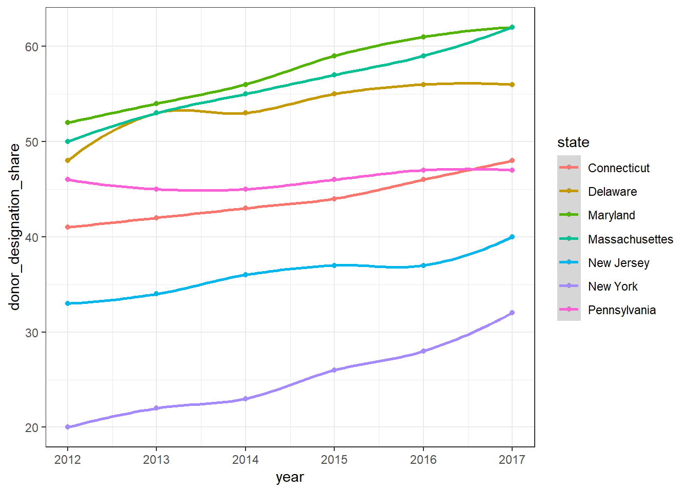

knitr::opts_chunk$set(eval = FALSE)
library(tidyverse)
library(ggplot2)
donor_share_time_compare = read.csv("data/state_donor_share.csv") %>%
janitor::clean_names() %>%
rename(state = x)
ggplot(donor_share_time_compare, aes(x = year, y = donor_designation_share, color = state)) +
geom_point() +
geom_smooth()## `geom_smooth()` using method = 'loess' and formula 'y ~ x'## Warning in simpleLoess(y, x, w, span, degree = degree, parametric =
## parametric, : Chernobyl! trL>n 6
## Warning in simpleLoess(y, x, w, span, degree = degree, parametric =
## parametric, : Chernobyl! trL>n 6## Warning in sqrt(sum.squares/one.delta): NaNs produced## Warning in stats::qt(level/2 + 0.5, pred$df): NaNs produced## Warning in simpleLoess(y, x, w, span, degree = degree, parametric =
## parametric, : Chernobyl! trL>n 6
## Warning in simpleLoess(y, x, w, span, degree = degree, parametric =
## parametric, : Chernobyl! trL>n 6## Warning in sqrt(sum.squares/one.delta): NaNs produced## Warning in stats::qt(level/2 + 0.5, pred$df): NaNs produced## Warning in simpleLoess(y, x, w, span, degree = degree, parametric =
## parametric, : Chernobyl! trL>n 6
## Warning in simpleLoess(y, x, w, span, degree = degree, parametric =
## parametric, : Chernobyl! trL>n 6## Warning in sqrt(sum.squares/one.delta): NaNs produced## Warning in stats::qt(level/2 + 0.5, pred$df): NaNs produced## Warning in simpleLoess(y, x, w, span, degree = degree, parametric =
## parametric, : Chernobyl! trL>n 6
## Warning in simpleLoess(y, x, w, span, degree = degree, parametric =
## parametric, : Chernobyl! trL>n 6## Warning in sqrt(sum.squares/one.delta): NaNs produced## Warning in stats::qt(level/2 + 0.5, pred$df): NaNs produced## Warning in simpleLoess(y, x, w, span, degree = degree, parametric =
## parametric, : Chernobyl! trL>n 6
## Warning in simpleLoess(y, x, w, span, degree = degree, parametric =
## parametric, : Chernobyl! trL>n 6## Warning in sqrt(sum.squares/one.delta): NaNs produced## Warning in stats::qt(level/2 + 0.5, pred$df): NaNs produced## Warning in simpleLoess(y, x, w, span, degree = degree, parametric =
## parametric, : Chernobyl! trL>n 6
## Warning in simpleLoess(y, x, w, span, degree = degree, parametric =
## parametric, : Chernobyl! trL>n 6## Warning in sqrt(sum.squares/one.delta): NaNs produced## Warning in stats::qt(level/2 + 0.5, pred$df): NaNs produced## Warning in simpleLoess(y, x, w, span, degree = degree, parametric =
## parametric, : Chernobyl! trL>n 6
## Warning in simpleLoess(y, x, w, span, degree = degree, parametric =
## parametric, : Chernobyl! trL>n 6## Warning in sqrt(sum.squares/one.delta): NaNs produced## Warning in stats::qt(level/2 + 0.5, pred$df): NaNs produced
ny_donor = read_csv("data/Donate_Life_Organ_and_Tissue_Donor_Registry_Enrollment_by_County__Beginning_September_2008.csv") %>%
janitor::clean_names()ny_donor = ny_donor %>%
filter(county != "TOTAL NYS" & county!="Out of State" & county !="Unknown") %>%
mutate(year = as.character(year)) %>%
mutate(month = as.character(month)) %>%
mutate(dummy_day = as.character("01")) %>%
mutate(date = (str_c(year, month, dummy_day, sep = "-"))) %>%
mutate(date = as.Date(date, "%Y-%m-%d"))
ggplot(ny_donor, aes(x = date, y = percent_eligible_population_enrolled, color = county)) +
geom_point()
filter(county == "Bronx") %>%
ggplot(aes(x = ))I know I can’t use standard errors because of non-independence, but I just want an estimate of the average slope for each county
ny_donor_coef = ny_donor %>%
group_by(county) %>%
nest() %>%
mutate(time_regression = map(data, ~lm(percent_eligible_population_enrolled ~ date, data = .x))) %>%
select(-data) %>%
mutate(time_regression = map(time_regression, broom::tidy)) %>%
unnest() %>%
select(county, estimate) %>%
arrange(estimate)plot examing the year 2012 to look for a change in percentage enrolled slope. It is organized by smallest current percentage to largest
organ = read_csv("data/organ_spline.csv") organ %>% filter(!(county %in% c(“TOTAL NYS”, “St Lawrence”, “Cattauragus”))) %>% group_by(county) %>% arrange(total_days) %>% mutate(last_observation = last(eligible_population_enrolled)) %>% ungroup() %>% mutate(county = fct_reorder(county, last_observation)) %>% ggplot(aes(x = date, y = eligible_population_enrolled, color = county)) + geom_line() + geom_vline(xintercept = (as.Date(“2012-07-01”))) + geom_vline(xintercept = (as.Date(“2017-02-01”))) + facet_wrap(~county) + theme_classic() + theme(axis.text.x = element_text(angle = 90, hjust = 1)) + theme(legend.position=“none”)
diff_diff_organ = organ %>%
filter(date == as.Date("2014-07-01") | date == as.Date("2012-07-01") | date == as.Date("2010-07-01")) %>%
select(county, date, eligible_population_enrolled) %>%
group_by(county) %>%
spread(value = eligible_population_enrolled, key = date) %>%
janitor::clean_names() %>%
mutate(slope_2012_2010 = (x2012_07_01-x2010_07_01)/as.integer(as.Date("2012-07-01")-as.Date("2010-07-01")),
slope_2014_2012 = (x2014_07_01-x2012_07_01)/as.integer(as.Date("2014-07-01")-as.Date("2012-07-01")),
slope_diff = slope_2014_2012-slope_2012_2010) %>%
ungroup() %>%
mutate(county = fct_reorder(county, slope_diff)) %>%
mutate(is_total_nys = ifelse(county == "TOTAL NYS", 1, 0))
diff_diff_organ_ny = filter(diff_diff_organ, county %in% c("TOTAL NYS"))
ggplot(diff_diff_organ, aes(x = county, y = slope_diff, color = is_total_nys)) +
geom_point() +
theme(axis.text.x = element_text(angle = 90, hjust = 1)) +
theme(legend.position = "none")based on this plot, it appears that most counties’ slopes actually decreased following the 2012 law (I used the two year period before and after). The percent enrolled countinues to increase, but it does so at a smaller rate.
diff_diff_organ_2017 = organ %>%
filter(date == as.Date("2018-09-01") | date == as.Date("2017-02-01") | date == as.Date("2015-07-01")) %>%
select(county, date, eligible_population_enrolled) %>%
group_by(county) %>%
spread(value = eligible_population_enrolled, key = date) %>%
janitor::clean_names() %>%
mutate(slope_2017_2015 = (x2017_02_01-x2015_07_01)/as.integer(as.Date("2017-02-01")-as.Date("2015-07-01")),
slope_2018_2017 = (x2018_09_01-x2017_02_01)/as.integer(as.Date("2018-09-01")-as.Date("2017-02-01")),
slope_diff = slope_2018_2017-slope_2017_2015) %>%
ungroup() %>%
mutate(county = fct_reorder(county, slope_diff)) %>%
mutate(is_total_nys = ifelse(county == "TOTAL NYS", 1, 0))
ggplot(diff_diff_organ_2017, aes(x = county, y = slope_diff, color = is_total_nys)) +
geom_point() +
theme(axis.text.x = element_text(angle = 90, hjust = 1)) +
theme(legend.position = "none")organ %>%
filter(date == as.Date("2018-09-01")) %>%
filter(county!= "TOTAL NYS") %>%
plot_ly(x = ~population_18_estimate, y = ~eligible_population_enrolled, type = "scatter", mode = "markers",
alpha = 0.5,
text = ~county)
#If you have a county that has a higher population of people, a higher percent enrolled is more helpful in terms of number of organs than if a county has a lower population of people, so New York should be taking advantage of larger counties, but this plot shows that larger counties tend to have lower percentages of eligible people enrolled.
#smaller counties have higher percentages enrolledorgan_compare_change = organ %>%
select(county, eligible_population_enrolled,date) %>%
filter(date == as.Date("2018-09-01")| date == as.Date("2008-09-01"), county != "St Lawrence" & county != "Cattauragus") %>%
spread(value = eligible_population_enrolled, key = date) %>%
janitor::clean_names() %>%
mutate(diff = as.integer(x2018_09_01 - x2008_09_01 )) %>%
mutate(county = fct_relevel(county, "TOTAL NYS")) %>% #nys will be first entry
arrange(county) %>% #so I will subtract from ny state
mutate(diff_from_state = diff - first(diff)) %>%
filter(county != "TOTAL NYS")
organ %>%
filter(date == as.Date("2018-09-01")) %>%
select(county, population_18_estimate) %>%
right_join(organ_compare_change) %>%
ggplot(aes(x = population_18_estimate, y = diff_from_state)) +
geom_point()